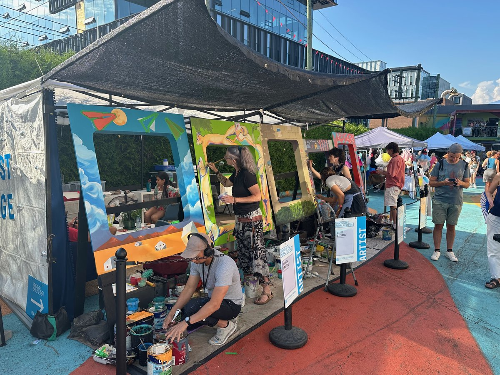

What we do
Everyday technology, clear structure and participant-led authorship. We help organizations build media practice that lasts.
Book an intro callAt a glance
Punkeye Pictures turns daily creative tasks into finished films over time. People use familiar tools, staff receive practical training, and projects move at participant pace. The goal is not volume. The goal is durable authorship and continuity.

- Who it's for — Developmental disability organizations, day programs, families, and schools aligned with disability-centered practice.
- Week to week — Small daily tasks, weekly review, and project assembly over months. We adapt the workflow to each participant's communication and support needs.
- What people get — Authorship, routine, and visible progress. Creative value sits with the person making decisions, not whoever is physically holding equipment.
- For organizations — Staff training, capture setup, archive routines, and a repeatable delivery model that survives turnover.
- What you need — Phones or tablets you already use, plus caregiver time and consistent support. We provide practical guidance and ongoing coaching.
Work samples
Participant-created films, storyboards, and frames will be posted once consent and release conditions are met. We publish only work participants and partner teams choose to share.
The boring parts handled
Sorting, filing, and keeping things organized are where many programs get stuck. Our model includes lightweight archive and workflow systems so caregivers can focus on facilitation, not media chaos.
Easy to start
People use familiar tools from day one, with support adapted to communication and access needs.
Daily goals
We break projects into manageable daily steps that build momentum without overwhelming staff or participants.
Your way in
There are multiple ways to contribute. Roles flex around each person's strengths and support needs.
Paced, not pressured
Projects unfold at participant pace. Timelines stay realistic while quality and consent stay central.
For organizations
In 2026, Punkeye is working with active partners to implement staff training, capture setup, archive practice, and supported production routines. The grant-funded controlled trial participant roster is full, but we are still accepting new paying clients and scoped consulting (short, focused advisory engagements) for teams that want to build aligned programs. Get in touch to discuss fit and timing.
Nothing hits the bin
We design against disposable activity. Creative work is archived and reused so participant effort is not lost each week.
Less waste, lower costs
Less dependence on disposable supplies, more continuity from existing tools and repeatable support practices.
Continuity that builds capacity
A repeatable model that helps teams sustain meaningful creative progression instead of restarting each week.